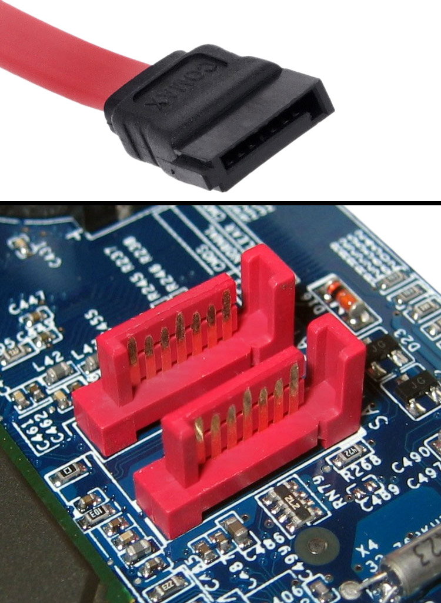

La norme Serial ATA ou SATA
(de l'anglais Serial Advanced Technology Attachment,
ou S-ATA), permet de connecter à une carte mère tout
périphérique compatible avec cette norme (disque dur,
lecteur de DVD, etc.). Elle spécifie notamment un
format de transfert de données ainsi qu'un format
de câble d'alimentation.

En savoir plus